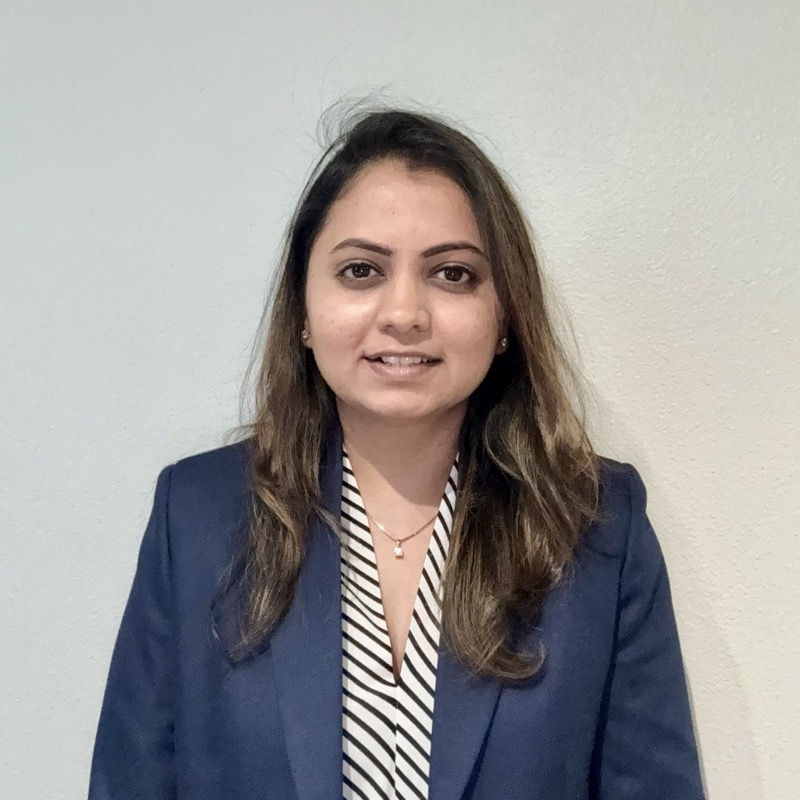

Seattle, WA. In what observers are calling a remarkable exhibition of modern product management, Heni Bhungalia, a practitioner of the artificial intelligence arts, has distinguished herself by shipping four production AI features upon the DreamCRM platform, all within a single engagement at AI20 Labs.
Of note: she partnered with engineering to clear Google CASA Tier 2 certification for OAuth integration, driving prioritisation and timelines on a step most early-stage teams skip.

She led a cross-functional team of 5 engineers, 4 interns, and 1 marketer across 3 concurrent AI products, shipping 11+ features in 6 months. She simultaneously contributed the ZeroGPU product strategy that secured pre-seed and seed funding, and led the Unirac Solar installer portal redesign, collapsing a 22-step workflow into a single 8-input dashboard, cutting interactions by 55 percent.
Holding a B.E. in Computer Science and an M.S. in Information Systems from Northeastern University, Seattle, she brings the technical fluency to work through architecture reviews in the morning and lead stakeholder presentations in the afternoon. A practitioner equally at home with API contracts and quarterly OKRs.
Heni undertook the construction of an entirely new AI-powered customer relationship management system, commencing from a state of absolute vacancy. She shipped Gmail and LinkedIn synchronisation, an AI action item engine, and an email drafting assistant. The concern achieved 57 to 60 percent first-month retention, a figure this correspondent has not encountered at comparable early-stage enterprises.
Cleared Google CASA Tier 2 for OAuth, a B2B sales eligibility requirement most early-stage teams skip. Onboarding completion: 17% to 50% via PostHog funnel analysis and A/B testing. Average session length: 7m 41s — users stayed.
Defined Developer and Edge Operator portal strategy for ZeroGPU, an edge AI infrastructure platform. Validated API architecture via Postman. Authored product roadmap that directly contributed to ZeroGPU securing pre-seed and seed funding.
End-to-end UX redesign of the installer and distributor portal using AI-assisted design tools. Reduced a 22-step, 3-section BOM generation workflow into a single 8-input dashboard with a live editable BOM, cutting interactions by 55 percent. Led cross-functional team across multiple time zones from user data analysis through to development.
Led end-to-end development of CAMD's public research platform through a US-Italy international collaboration. Sole designer and developer; presented design options to research leads, cleared university accessibility and compliance standards. Published at DRS 2024, achieving 1,241+ downloads in year one.
Built customer-facing features for Stop & Shop and Food Lion — 300K+ combined daily visitors. Rebuilt search and discovery infrastructure, driving a 30% conversion lift in A/B tests. Weekly Ads and Digital Coupons optimised for a 25% engagement lift. All within a 6-month co-op.
Build something worth coming back to.